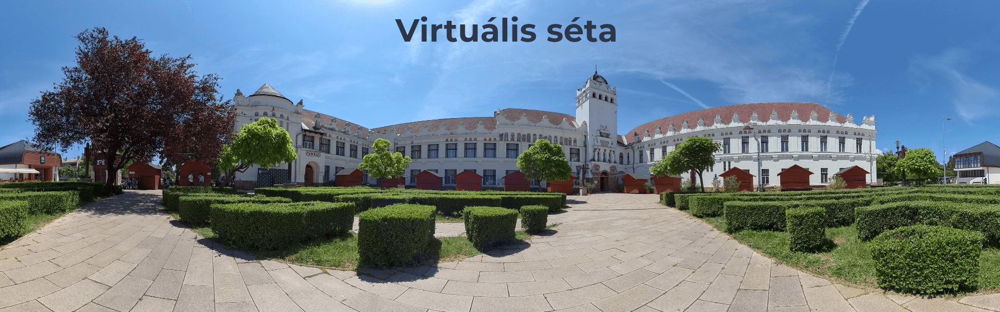

| Adatbázisrendszerek | Webprogramozás alapjai | Webes adatkezelő környezetek |
Üdvözlöm a honlapomon!
Ezt a weblapot Webprogramozás alapjai kurzuson készítettem el.
Forrás:
W3 schools

| Adatbázisrendszerek | Webprogramozás alapjai | Webes adatkezelő környezetek |
Üdvözlöm a honlapomon!
Ezt a weblapot Webprogramozás alapjai kurzuson készítettem el.